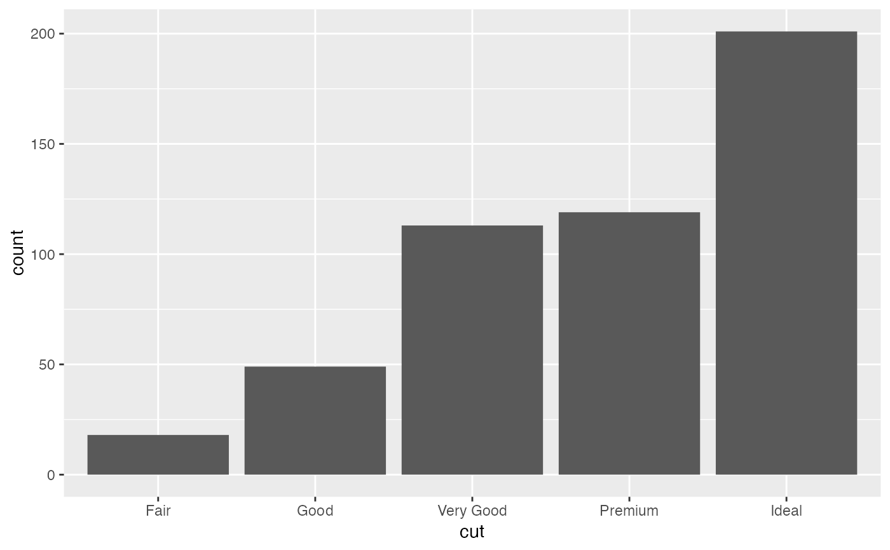

geom_hist_.RdMore general histogram (geom_histogram) or bar plot (geom_bar).
Both x and y could be accommodated. See details
geom_hist_( mapping = NULL, data = NULL, stat = "hist_", position = "stack_", ..., scale.x = NULL, scale.y = c("data", "variable"), as.mix = FALSE, binwidth = NULL, bins = NULL, positive = TRUE, adjust = 0.9, na.rm = FALSE, orientation = NA, show.legend = NA, inherit.aes = TRUE ) geom_histogram_( mapping = NULL, data = NULL, stat = "bin_", position = "stack_", ..., scale.x = NULL, scale.y = c("data", "variable"), as.mix = FALSE, positive = TRUE, adjust = 0.9, binwidth = NULL, bins = NULL, na.rm = FALSE, orientation = NA, show.legend = NA, inherit.aes = TRUE ) geom_bar_( mapping = NULL, data = NULL, stat = "count_", position = "stack_", ..., scale.x = NULL, scale.y = c("data", "variable"), positive = TRUE, adjust = 0.9, na.rm = FALSE, orientation = NA, show.legend = NA, inherit.aes = TRUE ) stat_hist_( mapping = NULL, data = NULL, geom = "bar_", position = "stack_", ..., binwidth = NULL, bins = NULL, center = NULL, boundary = NULL, breaks = NULL, closed = c("right", "left"), pad = FALSE, width = NULL, na.rm = FALSE, orientation = NA, show.legend = NA, inherit.aes = TRUE ) stat_bin_( mapping = NULL, data = NULL, geom = "bar_", position = "stack_", ..., binwidth = NULL, bins = NULL, center = NULL, boundary = NULL, breaks = NULL, closed = c("right", "left"), pad = FALSE, na.rm = FALSE, orientation = NA, show.legend = NA, inherit.aes = TRUE ) stat_count_( mapping = NULL, data = NULL, geom = "bar_", position = "stack_", ..., width = NULL, na.rm = FALSE, orientation = NA, show.legend = NA, inherit.aes = TRUE )
| mapping | Set of aesthetic mappings created by |
||||||
|---|---|---|---|---|---|---|---|
| data | The data to be displayed in this layer. There are three options: If A A |
||||||
| position | Position adjustment, either as a string, or the result of a call to a position adjustment function.
Function |
||||||
| ... | Other arguments passed on to |
||||||
| scale.x | A length 2 numerical vector. Scale the n coordinates of the points where the density is estimated. |
||||||
| scale.y | one of 'data', 'variable' to specify.
If the |
||||||
| as.mix | Logical. Under each variable, if |
||||||
| binwidth | The width of the bins. Can be specified as a numeric value
or as a function that calculates width from unscaled x. Here, "unscaled x"
refers to the original x values in the data, before application of any
scale transformation. When specifying a function along with a grouping
structure, the function will be called once per group.
The default is to use the number of bins in The bin width of a date variable is the number of days in each time; the bin width of a time variable is the number of seconds. |
||||||
| bins | Number of bins. Overridden by |
||||||
| positive | If |
||||||
| adjust | adjust the proportional maximum height of the estimate (density, histogram, ...). |
||||||
| na.rm | If |
||||||
| orientation | The orientation of the layer. The default ( |
||||||
| show.legend | logical. Should this layer be included in the legends?
|
||||||
| inherit.aes | If |
||||||
| geom, stat | Use to override the default connection between geom_hist_()/geom_histogram_()/geom_bar_() and stat_hist_()/stat_bin_()/stat_count_(). |
||||||
| center | bin position specifiers. Only one, |
||||||
| boundary | bin position specifiers. Only one, |
||||||
| breaks | Alternatively, you can supply a numeric vector giving
the bin boundaries. Overrides |
||||||
| closed | One of |
||||||
| pad | If |
||||||
| width | Bar width. By default, set to 90% of the resolution of the data. |
x (or y) is a group variable and y (or x) a target variable to be plotted.
The result is a different histogram of y (x) for each value of x (y).
If only one of x or y is provided, it will be the target variable (no grouping) and
the standard geom_histogram() will be executed. Several things should be noticed:
1. If both x and y are given, they can be one discrete one continuous or
two discrete. But they cannot be two continuous variables (which one will be considered as a group variable?).
2. geom_hist_ is a wrapper of geom_histogram_ and geom_count_. In other words, suppose the y is our interest,
geom_hist_() can accommodate both continuous or discrete "y" but geom_histogram_() is only for the continuous y and
geom_bar_() is only for the discrete y.
3. There are four combinations of scale.y and as.mix
scale.y = "variable" and as.mix = FALSEThe density estimates area of each group under the same variable is the same and scaled to maximum of 1.
scale.y = "variable" and as.mix = TRUEThe density estimates area of each group under the same variable is proportional to its own counts (over this variable).
scale.y = "data" and as.mix = FALSEThe sum of density estimates area of all group is scaled to maximum of 1. The sum of the density area for each variable is proportional to the its counts (over the whole dataset). Under each variable, the area of each group is the same.
scale.y = "data" and as.mix = TRUEThe sum of density estimates area of all group is scaled to maximum of 1 and the area of each group is proportional to its own count.
Note that, if it is a grouped bar chart (both x and y are categorical),
parameter `as.mix` is useless.
This geom treats each axis differently and, thus, can thus have two orientations. Often the orientation is easy to deduce from a combination of the given mappings and the types of positional scales in use. Thus, ggplot2 will by default try to guess which orientation the layer should have. Under rare circumstances, the orientation is ambiguous and guessing may fail. In that case the orientation can be specified directly using the orientation parameter, which can be either "x" or "y". The value gives the axis that the geom should run along, "x" being the default orientation you would expect for the geom.
geom_histogram, geom_density_
if(require(dplyr) && require(tidyr)) { # histogram p0 <- mpg %>% dplyr::filter(manufacturer %in% c("dodge", "ford", "toyota", "volkswagen")) %>% ggplot(mapping = aes(x = manufacturer, y = cty)) p0 + geom_hist_() ## set position #### default is "stack_" p0 + geom_hist_(mapping = aes(fill = fl)) #### "dodge_" p0 + geom_hist_(position = "dodge_", mapping = aes(fill = fl)) #### "dodge2_" p0 + geom_hist_(position = "dodge2_", mapping = aes(fill = fl)) # bar chart mpg %>% ggplot(mapping = aes(x = drv, y = class)) + geom_hist_(orientation = "y") # scale.y as "variable" p <- iris %>% tidyr::pivot_longer(cols = -Species, names_to = "Outer sterile whorls", values_to = "x") %>% ggplot(mapping = aes(x = `Outer sterile whorls`, y = x, fill = Species)) + stat_hist_(scale.y = "variable", adjust = 0.6, alpha = 0.5) p # with density on the left p + stat_density_(scale.y = "variable", adjust = 0.6, alpha = 0.5, positive = FALSE) ########### only `x` or `y` is provided ########### # that would be equivalent to call function # `geom_histogram()` or `geom_bar()` ### histogram diamonds %>% dplyr::sample_n(500) %>% ggplot(mapping = aes(x = price)) + geom_hist_() ### bar chart diamonds %>% dplyr::sample_n(500) %>% ggplot(mapping = aes(x = cut)) + geom_hist_() }#>